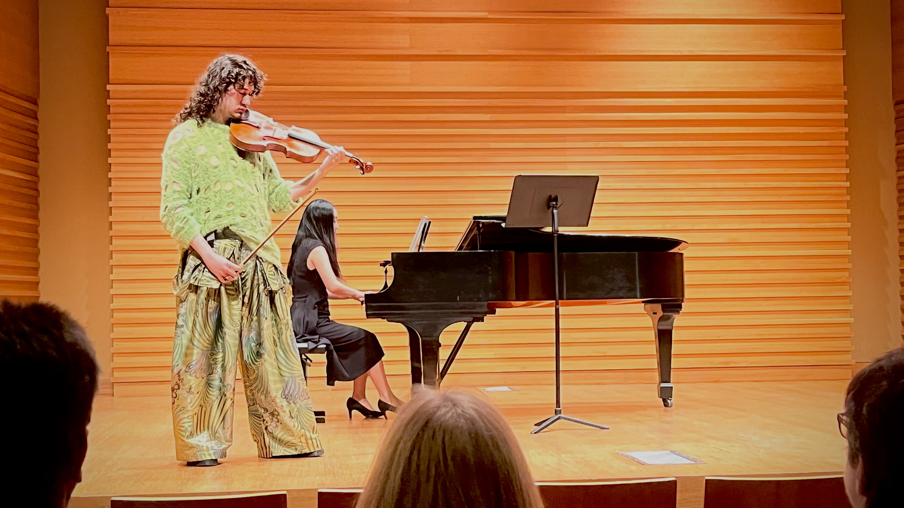

RF engineer studying the resonance between fields — electromagnetic by day, acoustic by night.
I'm an electrical engineering student at the University of South Florida working on RF/microwave circuit design, antenna simulation, and radar imaging in HFSS, ADS, and MATLAB. In parallel, I perform chamber music as a violist. I'm applying for PhD programs in electrical engineering alongside a master's in chamber music performance.
Three doors.

Research & Projects
Dual-band PIFA, mmWave MIMO radar imaging.

Viola & Chamber
Recital programming, chamber collaboration, and 20th-century viola repertoire.

CV & Contact
Education, publications, mentors, and contact information — scrollable, no PDF needed.
What I want to do next.
My research interests sit at the intersection of antenna systems, radar imaging, and machine learning for RF. I'm drawn to problems where signal-processing rigor meets electromagnetic constraints — mmWave MIMO imaging, near-field calibration, MIMO-SAR reconstruction, and learned approaches to clutter and target separation in compact-aperture radars.
My recent work covers a dual-band PIFA benchmarked against the Chu–McLean bound, two BJT LNA designs in ADS with Modelithics models, and a 3D backprojection imaging pipeline for an SFCW MIMO module. I'm looking for a PhD lab where I can push that combination further — whether toward conformal arrays, computational imaging, or ML-assisted RF systems.
Recent.
- June 11, 2026 "Low-cost precision scanning platform for mm-wave SAR imaging using a modified 3D printer" in SPIE Volume 14039
- April 20, 2026 1st place in student poster competition at WAMICON 2026 (poster in research section)
- May 2026 Dual-band PIFA design finalized in HFSS
- Apr 2026 Solo viola recital — Bach, Bloch, Clarke, Beach.
- Mar 2026 BFP420 LNA layout cosimulation completed in ADS; group report submitted.
- Feb 2026 Extending mmWave MIMO radar pipeline toward MIMO-SAR imaging.